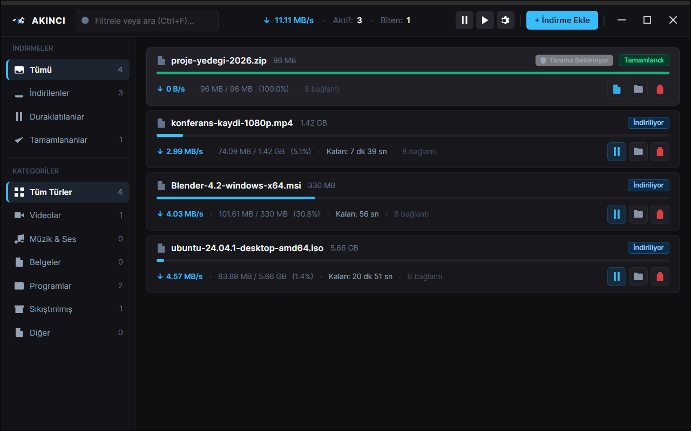

v1.1.0 yayında
İndirmeler hızlansın, yarıda kalmasın, kaldığı yerden sürsün.
Akıncı; dosyaları paralel bağlantılarla parçalara bölerek indiren, kesintide kaldığı yerden devam eden ve indirilen dosyaları VirusTotal ile kontrol eden ücretsiz, açık kaynak bir indirme yöneticisidir.

Neler yapabilir?
Büyük dosyalar, kopan bağlantılar ve şüpheli indirmeler için tasarlandı.
-
Çok kanallı parçalı indirme
Dosyayı 32'ye kadar parçaya bölüp aynı anda indirir. Erken biten bağlantılar, yavaş kalan parçaların yükünü devralır.
-
Kaldığı yerden devam
Bağlantı koptuğunda otomatik yeniden dener. Uygulamayı kapattığınızda indirmeler duraklatılıp kaydedilir; sonra kaldığı yerden sürer.
-
VirusTotal güvenlik taraması
İndirme bitince dosyanın SHA-256 özetini 70'ten fazla antivirüs motoruyla kontrol eder. Dosyanın kendisi gönderilmez.
-
Tarayıcı entegrasyonu
Chrome Web Mağazası'ndaki eklenti indirmeleri Akıncı'ya aktarır, sağ tıkta "Akıncı ile İndir" ekler ve HLS/DASH video akışlarını yakalar.
-
Hız sınırı ve kuyruk
Toplam indirme hızını sınırlayın, aynı anda kaç indirme yapılacağını belirleyin; sıradakiler otomatik başlar.
-
Kurumsal kimlik doğrulama
HTTP/HTTPS ve FTP/FTPS; Basic, NTLM, Kerberos ve Negotiate desteği. Tarayıcıda oturum açtığınız sitelerden de indirir.
Üç adımda kurulum
-
İndirin
Akinci-Setup.exe dosyasını indirip çalıştırın.
-
Kurun
Türkçe sihirbazı izleyin. VirusTotal API anahtarınız varsa sihirbazda girebilirsiniz; yoksa sonra Ayarlar'dan eklersiniz.
-
Tarayıcıya bağlayın
Akıncı ilk açılışta tarayıcı eklentisini kurmayı önerir. Kabul edin, açılan Chrome Web Mağazası sayfasında "Chrome'a ekle" deyin; indirmeleriniz kendiliğinden Akıncı'ya gelsin.
Windows "bilgisayarınızı korudu" uyarısı mı? Kurulum programı henüz dijital olarak imzalı değil. Uyarıda Ek bilgi → Yine de çalıştır seçin.
Sık sorulan sorular
Akıncı ücretsiz mi?
Evet. Akıncı açık kaynaktır: çekirdek kütüphaneler MIT, masaüstü arayüzü GPLv3 lisanslıdır. Reklam veya ücretli sürüm yoktur.
Verilerim nereye gidiyor?
İndirme listeniz, ayarlarınız ve tarayıcıdan aktarılan oturum bilgileri yalnızca kendi bilgisayarınızda saklanır. VirusTotal anahtarı girerseniz yalnızca biten dosyanın SHA-256 özeti sorgulanır. Ayrıntılar: Gizlilik politikası.
Tarayıcı eklentisi nereden kurulur?
Eklenti Chrome Web Mağazası'nda. Akıncı ilk açılışta (veya Ayarlar → Eklentiyi Kur) tarayıcı köprüsünü yapılandırıp mağaza sayfasını açar; "Chrome'a ekle" demeniz yeterli. Edge'de "Diğer mağazalardaki uzantılara izin ver" seçeneğiyle aynı sayfadan kurabilirsiniz.
Akıncı'yı nasıl kaldırırım?
Denetim Masası → Programlar ve Özellikler (veya Ayarlar → Uygulamalar) içinden Akıncı'yı seçin. İndirdiğiniz dosyalara dokunulmaz; ayarların ve indirme geçmişinin silinip silinmeyeceği sorulur.
Neden yönetici izni istemiyor?
Akıncı yalnızca sizin kullanıcınız için kurulur (%LOCALAPPDATA%\Programs\Akinci). Sistem klasörlerine ve diğer kullanıcılara dokunmaz.